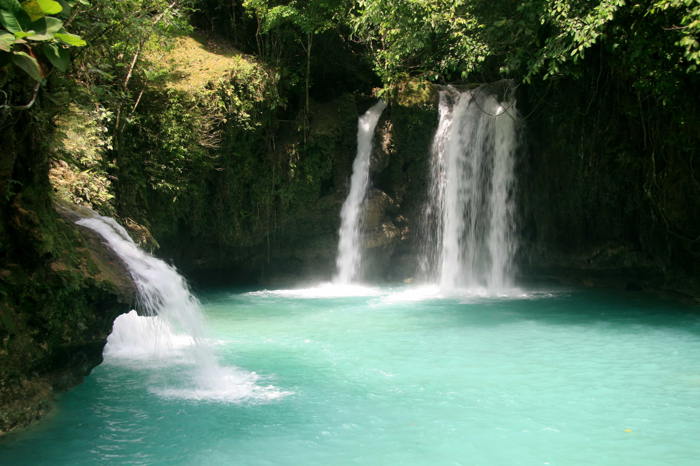

3D Model (Touch and Rotate)
Water bodies constitute areas of water - both salt and fresh, large and small - which are distinct from one another in various ways. They range in size from oceans at the biggest end of the spectrum to little brooks and streams; geographers normally don't include small, temporary water features such as puddles in this category. From pond to Pacific, bodies of water rank among the most significant natural resources on the planet, to say the least.
Here are some bodies of water that can be found in the Philippines:
OCEAN
This is the widest and largest body of water in the world. Huge sea vessels can travel here. There are five oceans in the world:
Pacific Ocean - closest to the Philippines, the largest ocean.
Atlantic Ocean
Southern Ocean
Indian Ocean
Arctic Ocean
SEA
The sea is salty. A lot of aquatic resources live in the sea. Examples of seas are the Philippine Sea and the South China Sea (which is the largest sea near the Philippines).
LAKE
A lake is a body of water surrounded by land. There are many lakes in the Philippines. Lake water is fresh, and some of the fish that you can find in Philippine lakes are hito (catfish), dalag, tilapia, and ayungin. Examples of lakes are: Taal Lake and Lanao Lake.
CHANNEL
A channel is a wide body of water found between islands. This has to be crossed into order to move from one island to another. Examples of channels are: Babuyan Channel (found in northern Luzon), and Balintang Channel (separates Batanes from the Babuyan Islands).
WATERFALL

Waterfalls fall from a high place. Examples are: Tinago Falls (found in Iligan City), and Katibawasan Falls (found in Camiguin).
BAY
This serves as a harbor for sea-faring vessels in the Philippines. Passengers ride here, and goods can be loaded for transport to different places. Manila Bay is known for its beautiful sunsets. Examples are: Subic Bay, and Manila Bay.
STRAIT
This is a narrow body of water, which separates two large land forms. Examples are: San Juanico Strait which is found between Samar and Leyte. This is the narrowest strait in the Philippines.
GULF
This is part of the ocean, and can be found at the opening of the sea. This can be used as a port for sea vessels. You can also fish here. Examples: Lingayen Gulf found near Pangasinan, and Ragay Gulf found near Camarines Norte.
RIVER
The river is a wide body of water that flows towards the sea. It has fresh water, so fresh-water fishes are harvested from rivers. Examples of rivers are: Cagayan River (the longest and largest river in the Philippines), Pasig River (a river that can be seen in the city).
STREAM or BROOK
This is a small body of flowing water. The source is a spring.
CREEK
This is shallow and smaller than a stream. The water is used by farmers to irrigate their rice fields.
SPRING
This is the smallest body of water. The water come from beneath the ground, and can be either hot or cold. Hot springs can be found in areas near volcanoes. Examples: Bukal ng Bundok Makiling, Tiwi Hot Spring.